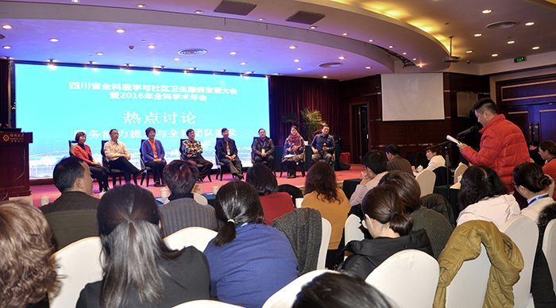
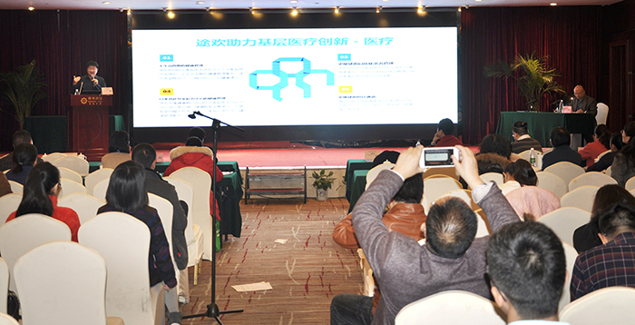
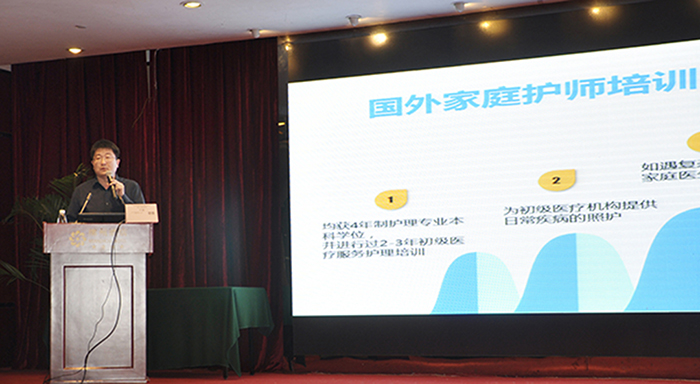

2016四川全科学术年会完美收官 互联网+基础医疗备受瞩目
2016年12月2日，由四川省社区卫生协会、四川省医师协会、绵阳市医学会主办，四川省社区卫生协会全科委员会、四川省医师协会全科医师分会基层委员会等单位协办的“2016四川全科学术年会”于绵阳如火如荼的举行，在进行为期三天的激烈探讨和碰撞交流后，于12月4日完美谢幕。

据悉，此次与会人员皆来自于医学领域、互联网+医疗领域的权威专家及行业精英，而途欢，作为以科技助力医疗的创新型企业、基础医疗创新的践行者也在受邀之列。

“社区医疗发展的新方向在哪里？” “医疗行业缺少全科人才！”“整个行业对全科医学的认识就局限在乡镇医生……”此次会议对现今社区医疗存在的问题进行了一番大梳理，与会人员踊跃发言，陈辞尖锐。据悉，此次会议除特别邀请到祝墡珠、赵光斌等国内知名全科医学专家针对全科临床的新进展、新观念、新方法进行分享外，与会专家还特别针对如何提高成都乃至各县市基层基本医疗服务能力发表了看法，并通过workshop的形式进行现场实训，互相交流经验与心得。会上特别指出，社区基层医疗服务的能力决定着整个社会的医疗服务水平，只有提高基层基本医疗服务能力才能让更多的人受惠。

本次会议中，途欢首席医疗官于波先生，以“回归社区，回归健康，新形式下的医疗创新”为主题进行专题演讲。于波先生展示了国内外家庭医学研究的成果，结合自身的国际公益组织医疗经验，倡导家庭医生发挥好全民医疗健康体系中的健康守门员角色，弥补以三甲医院中心的医疗服务模式的不足，以患者为中心，提供综合全面的、以团队为基础的、整合式医疗服务。
作为一家医疗基因的科技创新企业，途欢以医学专业为前提和基石，将移动互联网、数据技术应用于健康领域，协同于现有医疗体系，改善医疗健康服务的能效，让医疗资源发挥更广泛价值，让大众获得更优质的医疗服务，让医生与医院获得更长足的学术发展。
目前国内家庭医生服务仍存在人群覆盖率低，服务体验不足，缺乏信息化工具及管理工具、效率不足等问题。对此，于波先生坚信，通过基础医疗创新，途欢将助力医学、教学与研究，实现价值医疗。